The drive from Plitvice to Lake Bled is among the most scenically rewarding of the entire trip. From the karst plateau of central Croatia the road climbs toward the Slovenian border through increasingly alpine terrain — beech and hornbeam giving way to spruce and fir, the limestone karst replaced by younger glacial landforms, the temperature dropping as the elevation increases. By the time we crossed into Slovenia the Julian Alps were visible ahead, their snow-capped peaks rising above a layer of spring cloud.
We made a detour to Lake Bohinj before driving the final stretch to Bled. Bohinj is Bled's less famous, less visited, and arguably more beautiful neighbour — a larger, wilder glacial lake with no island, no castle, and none of the tourist infrastructure that has grown around Bled over the past century. What it has is a profound quietness, a cathedral quality to the surrounding mountains, and water that reflects the peaks with a mirror clarity that justifies every superlative ever applied to Slovenian alpine scenery.
We arrived at Lake Bled in the early afternoon. The scene — the island church, the clifftop castle, the Julian Alps behind, the emerald water in the foreground — was so perfectly composed that it looked like a miniature. The kind of landscape that appears on postcards and screensavers, and that you assume must be at least partially a product of selective photography. It isn't. It really looks like that.
Lake Bohinj sits in the Triglav National Park, 26km from Bled, and is Slovenia's largest permanent lake. Where Bled is curated and photogenic, Bohinj feels genuinely wild. The surrounding peaks — Triglav itself visible on clear days at 2,864 metres — dwarf the lake entirely. The water is darker than Bled, deeper, and colder; in early May with snow still on the highest ridges, the lake temperature was several degrees below what felt comfortable for swimming. But for photography, for walking, and for simply standing on the shore in silence, Bohinj offers something that its more famous neighbour can't entirely provide.
We had the lakeside almost entirely to ourselves. A wooden jetty extended into the lake near the village of Ribčev Laz, and from its end the full panorama of the Julian Alps reflected in the still water provided one of those compositions that requires no skill: you point the camera at the view and press the shutter and the image arrives fully formed. We stayed an hour longer than planned.
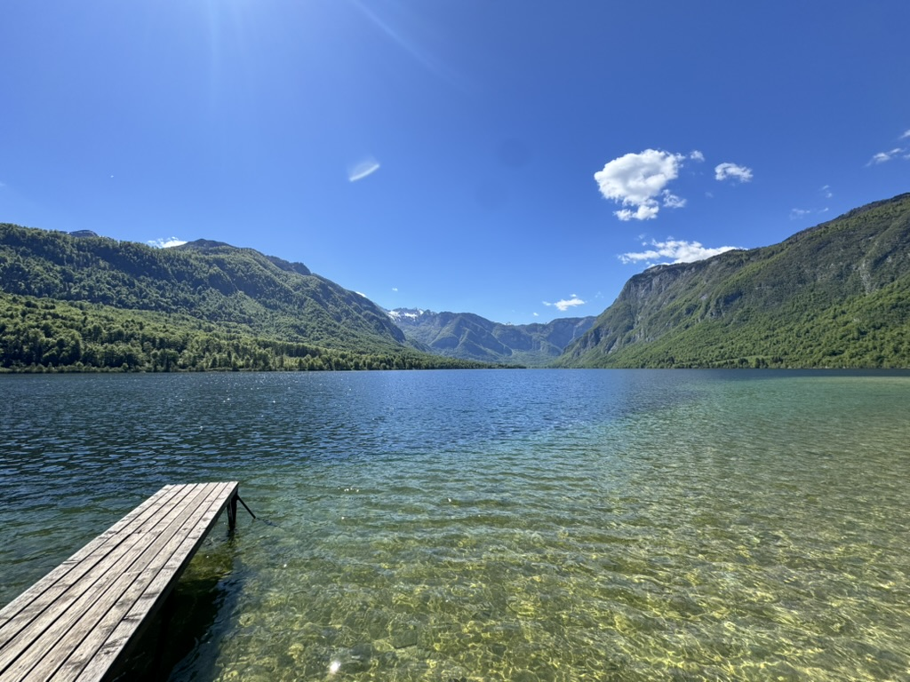
Lake Bled has been attracting visitors since the 19th century, when the Slovenian physician Arnold Rikli established a spa resort on its shores. It has been described in every travel publication in every language, photographed from every conceivable angle, and visited by millions of tourists every year. None of this diminishes it. The combination of the glacially carved lake, the island church, the 12th-century castle perched on a 100-metre cliff, and the Julian Alps as backdrop is simply not reducible. Each element is extraordinary individually; together they produce something close to perfection.
We stayed at Garni Hotel Berc, a highly rated boutique property a five-minute walk from the lake shore, and used Bled as a base for both a morning at Bohinj and an afternoon at the lake itself. The afternoon light on Lake Bled is particularly fine — the castle catches the western sun, the island church's baroque tower glows warm white against the darkening alpine sky, and the Pletna rowing boats — traditional wooden vessels that have ferried visitors to the island since the 17th century — trace quiet wakes across the emerald surface.
We walked the lake circuit early the following morning, before the day-trippers arrived from Ljubljana. The first light caught the snowy peaks above the castle and turned them briefly pink, then gold. The lake surface was still. A single Pletna boat moved slowly toward the island carrying a wedding party. It was a good morning to be in Slovenia.
Lake Bled
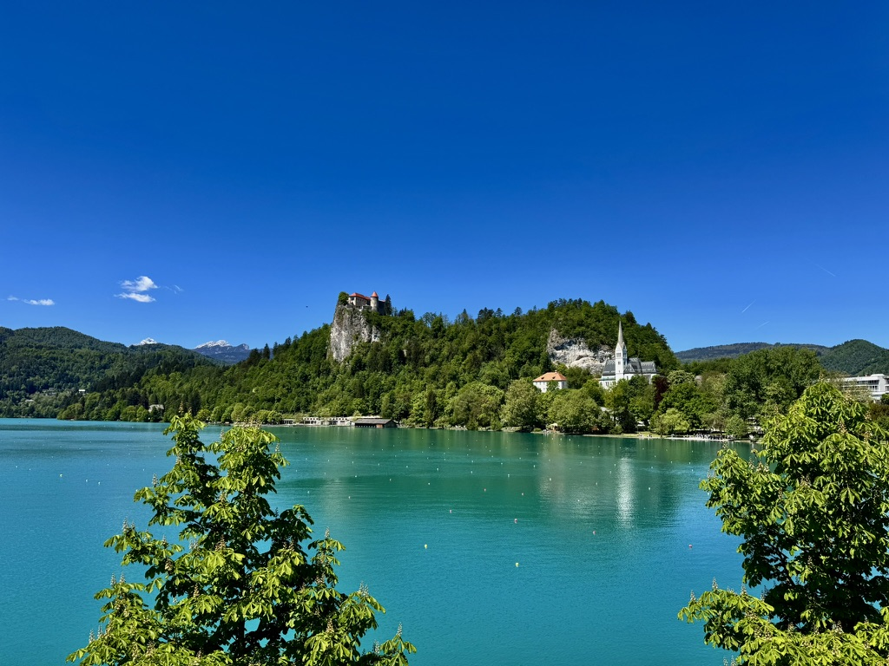
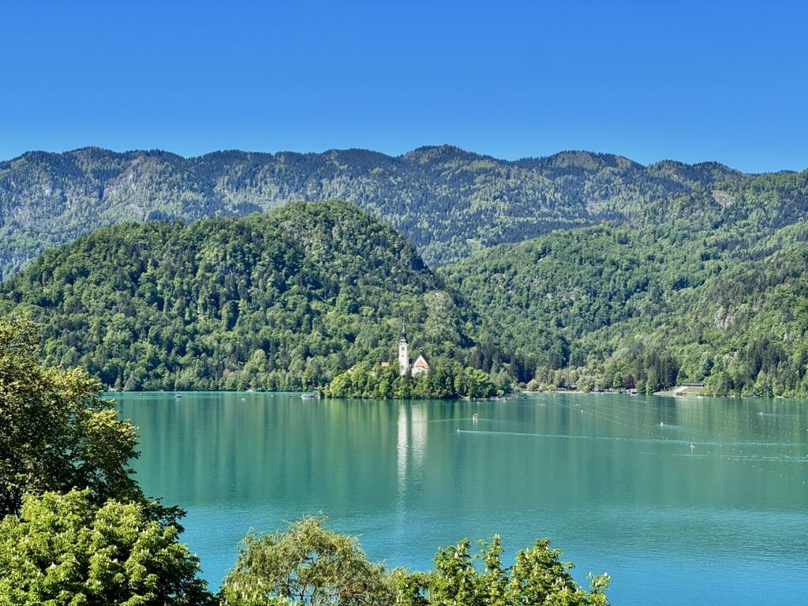
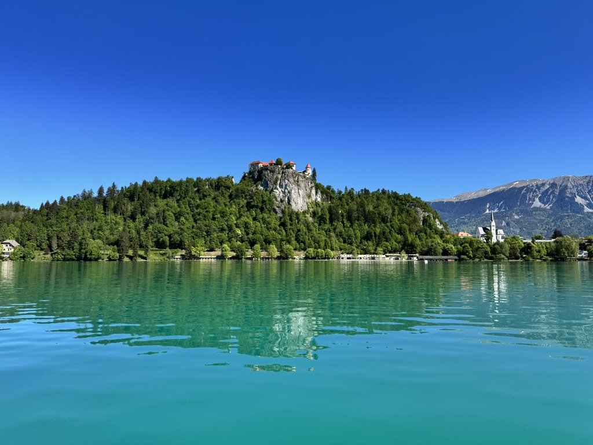
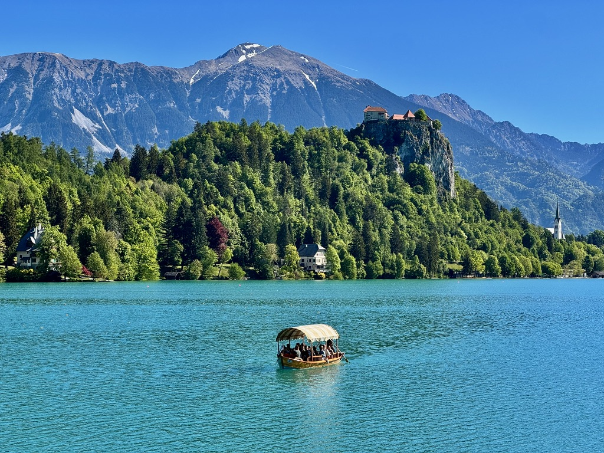
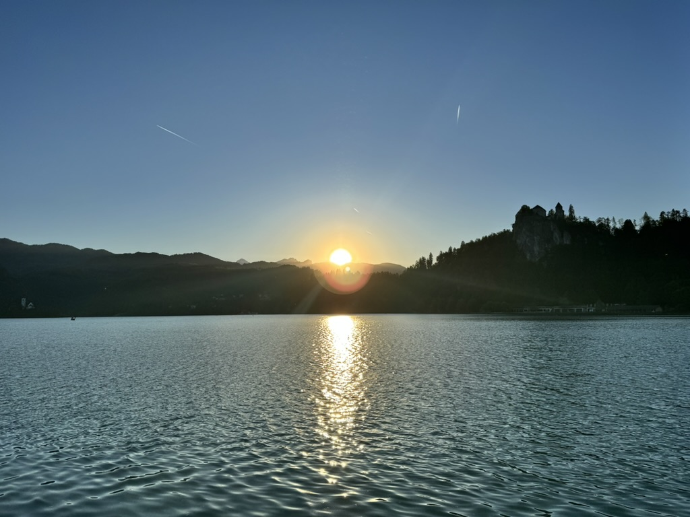
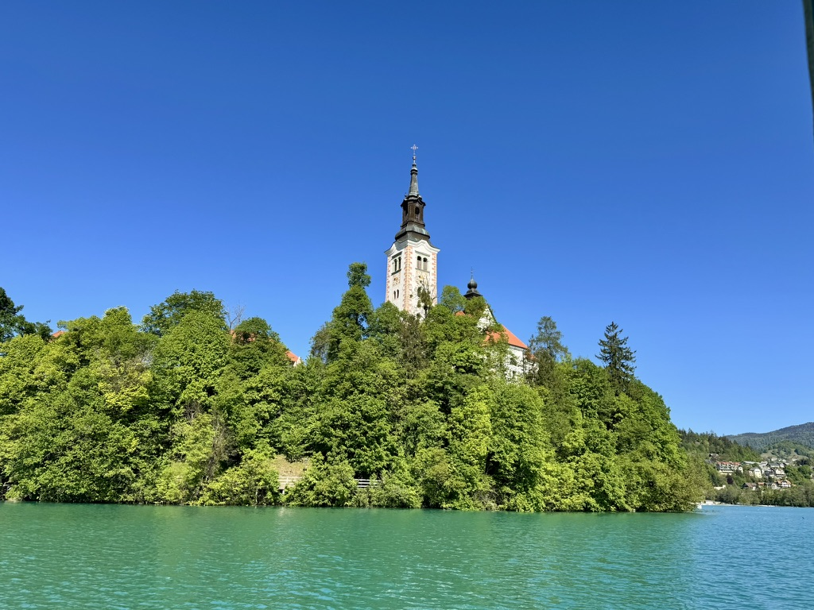
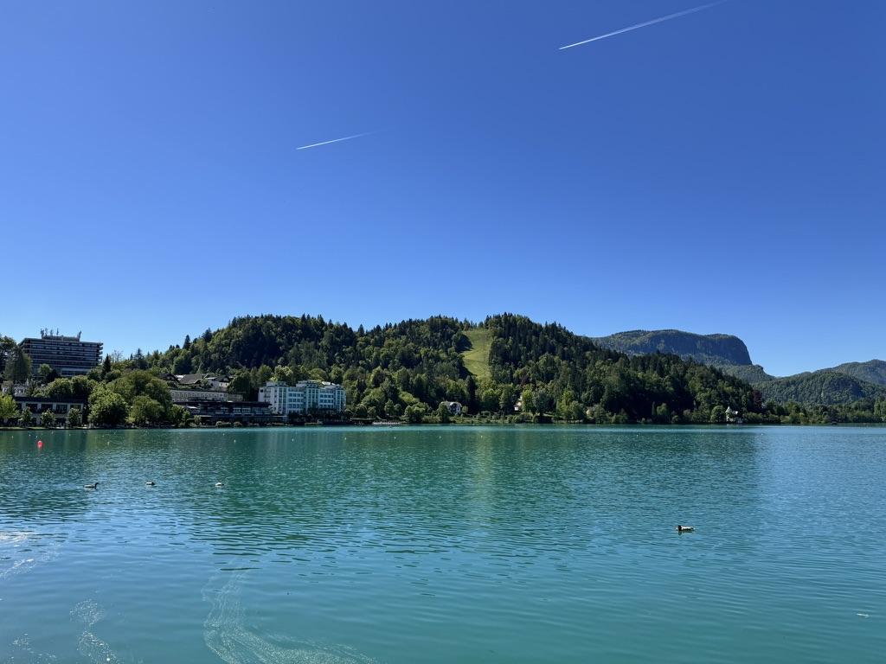
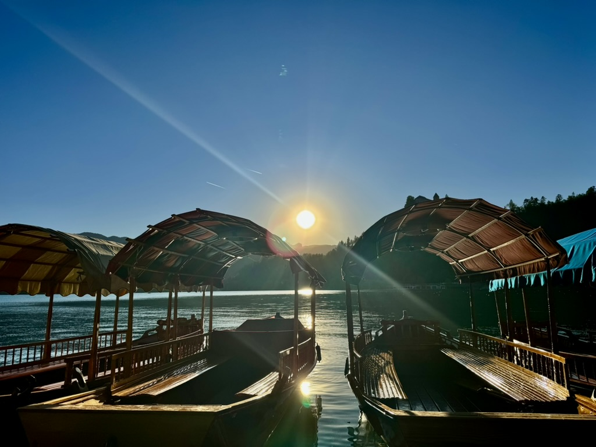
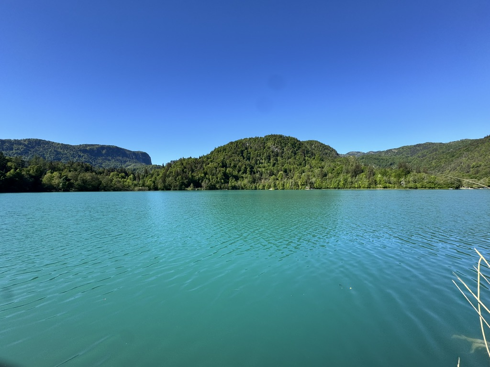
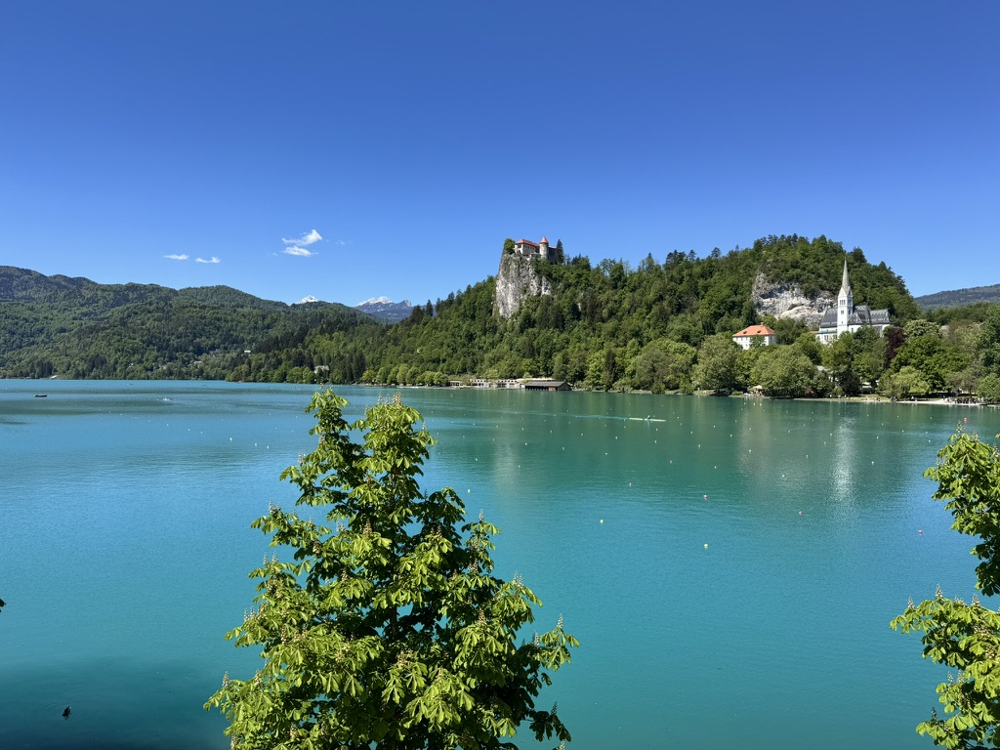
Zagreb is chronically underestimated. Overshadowed by the Dalmatian coast in every brochure, the Croatian capital has a compact, walkable city centre, a genuinely excellent cafe culture, some fine museums, and a Upper Town (Gornji Grad) that merits an afternoon's exploration. We arrived via the A1 motorway from Slovenia in the early evening, checked into the Canopy by Hilton on Vlaška ulica — conveniently close to the Upper Town and Dolac market — and used the remaining daylight to walk the main square and the old town.
The following morning we found the Dolac market open and lively — Zagreb's central covered and open-air market, which has occupied the same square since 1930 and offers a morning's entertainment entirely free of tourist infrastructure. Red-umbrella stalls selling vegetables, honey, dried herbs, and local cheese; an indoor fish market below; a particular local atmosphere that reminded us we were in a real capital city with a real everyday life, not just a tourist destination.
We left for Zagreb Airport at eight in the morning, connecting through London Heathrow and arriving back in Houston the same evening. Ten days from departure to return. Already planning the next trip.